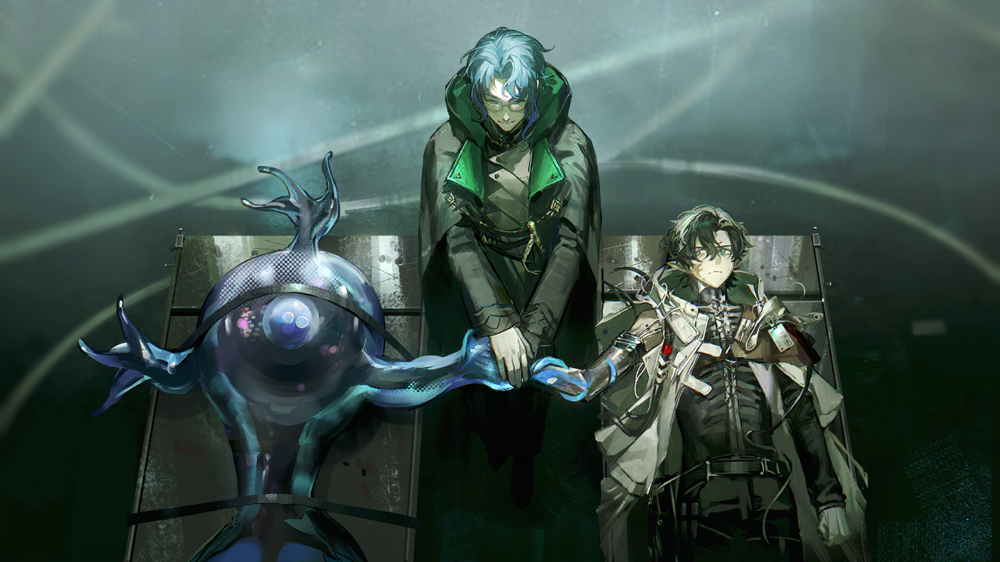

纳乔
呼……除了被审判庭带走的人，剩下的都在这里了。
重伤的岛民
谢、谢谢……

焦急的岛民
你一个人，救了十四个重伤的同胞？还是背着他们从水路走的……简直是奇迹……

纳乔
奇迹……
纳乔
我只是不想看着同胞被落在外面流血而死。为了不被审判庭的人逮捕，很多人躲得很隐蔽。

纳乔
索莱达，我找到你的时候，你腿上的伤看着很重，止血了吗？
焦急的岛民
奥卢斯先生已经帮我处理过了，倒是你……
焦急的岛民
阿奎拉以前就念叨着你手臂伤得很重根本不适宜下水，现在你不光下了水，还一趟一趟地带了这么多人回来……你也找他处理一下吧？
纳乔
……
疲惫的年轻人躲开了同伴触碰自己的手，就像是害怕自己会伤害她一样。

纳乔
不用担心，索莱达。我的手臂，已经找奥卢斯先生治疗过了。

奥卢斯
不论你如何选择，纳乔，我向你保证，我都可以治好你的手臂。

纳乔
治好我的手臂……
纳乔
奥卢斯先生，互助会的大家已经没办法回头了，是吗？
奥卢斯
你可以试着说服他们，但会很难。
纳乔
我明白。我曾无数次劝说鲁菲纳奶奶不要再做危险的事，可她还是会在夜晚离开。
纳乔
奶奶做的事，阿奎拉做的事，在我看来依然是偏激的。
纳乔
但在加入互助会之后我理解了一件事——我永远是岛民中的一员。我想帮他们，可以我现在的状况……
纳乔
奥卢斯先生，您确实能治好我的手吗？

奥卢斯
好孩子。

奥卢斯
我的治疗方式有些特殊，如果你想好了，就跟我来吧。要是治疗过程中感到不适应，你也可以拒绝。

或许是因为阿奎拉的死让纳乔想起了鲁菲纳奶奶，或许是因为互助会的同胞露出的狂热令他躁动也令他担忧。
即便从眼前这个温柔的男人身上感受到了危险的气息，他还是毅然决然地将自己的伤痛交予对方处理。此时他脑中只有一个想法——
他不能让同胞们都怀着仇恨和遗憾死去，他想用一双健全的手臂拦住他们或者救下他们，只要奥卢斯能做到，他愿意付出代价。
黏滑的声音传入他的耳朵，他死死盯着工坊的暗处，一个影子悄然立在不远处。它缓慢地、怪异地朝自己靠近。
纳乔
那是……
奥卢斯
嘘——
奥卢斯
你一定会害怕，它就是审判庭写在经卷里的罪孽和怪物，就是你们不被允许靠近大海的唯一原因。
奥卢斯
但放心，这个个体……它是我最满意的作品，是我几十年来所有研究成果的具象显现。
奥卢斯
它不会愤怒、不会争吵、不会流泪、不会施暴，也不会试图把你变成它的同伴。
奥卢斯
我篡改了它神经信号的传递逻辑，使它不那么容易受“初生”意志的影响。它还保留着同化其他生物的能力，但不再有那么做的动机。
奥卢斯
当然，“初生”的意志是刻在基因里的，它还是会顽强地试图制造新的神经组织，来替换被我动过手脚的那些……
奥卢斯
但只要勤加干预，进程就不会那么快。
奥卢斯
如果你怀疑我的言辞，我们随时可以终止手术。海嗣是凶残的、无法沟通的怪物，这是伊比利亚人的共识——
纳乔
不，我可以理解。
奥卢斯
哦？
纳乔
我也花了近二十年想向伊比利亚人证明，岛民是无害的，是没有攻击性的……但我的努力还不够，我能做到的太少了。
纳乔
请继续手术吧，奥卢斯先生。我总不能在寻求帮助的途中再晕倒一次了。
柔滑的触手攀上纳乔的指尖，本不该有太多触感的假肢正在颤抖。
他见过捕鳞人被恐鱼袭击的惨状，他竭力控制着自己不要抽回手，然后——
疼痛真的消失了。

海嗣
（欣快地翕动薄膜）
纳乔
……
奥卢斯
令人赞叹，纳乔，你比我想象中更加镇定。你在无人点拨的情况下，理解了分享的本质。
纳乔
分享……奥卢斯先生，您与海嗣为伍，但又不像是癫狂的异教徒，您想要的究竟是什么？
奥卢斯
我想要的，是一个真正的“理想国”。
纳乔
……
愤怒的岛民
纳乔，帮我把绷带再扎紧一点。
纳乔
不能再紧了，盖乌斯，勒得再紧止血效果也不会变好，只会让你疼。
愤怒的岛民
但这样就能盖过伤口的疼了。我们的行动不能到此为止……
纳乔
你在说什么？现在互助会半数的同胞被审判庭逮捕，街道上巡逻的惩戒军只增不减，我们还有不少伤员，停手吧！
愤怒的岛民
参与行动前我们每个人都立过誓，要让伊比利亚记住我们，要让审判庭和那群羞辱过我们的伊比利亚人后悔。
愤怒的岛民
岛民不是审判庭召之即来挥之即去的工具，我们要让所有伊比利亚人对我们感到恐惧，然后再赢得尊重。
愤怒的岛民
还没有到停手的时候……嘶……*伊比利亚粗口*站起来啊盖乌斯，站起来！
奥卢斯
盖乌斯，冷静一些。
纳乔
奥卢斯先生，您劝劝他们吧！
奥卢斯
同胞们，不甘和怨恨让你们的伤口血流不止，这是你们必须承担的代价，也是警告。
愤怒的岛民
导师，您了解我们每个人的情况，您知道我们究竟为何反抗。
愤怒的岛民
我的孩子被伊比利亚人摔死在干涸的井里，他们想借此平息大海的怒火，增加鳞获……但他们换来的是我的怒火。
愤怒的岛民
除了我和妻子安赫拉，谁还会记得这桩恶行，记得我们无辜的孩子？
愤怒的岛民
哪怕我失去双腿，我也会敲响仇人的家门；哪怕我失去声音，我也会宣扬他们的恶行！
奥卢斯
这是你的选择？
愤怒的岛民
是的。
奥卢斯
也是你们的选择？
愤怒的岛民们
是的。
奥卢斯
好。
纳乔
奥卢斯先生……？
愤怒的岛民
教堂怎么变成了……
奥卢斯
教堂是善意的伪装，也是避免审判庭找到互助会的手段。
奥卢斯
现在，信仰无法解决你的问题，我的同胞，而任何选择都需要付出代价。
奥卢斯
我可以治好你身体的疼痛，甚至让你遗忘所有经受过的折磨，只要你愿意分享。
愤怒的岛民
分享？
惊慌的岛民
这是什么？！是海里的怪物！导师……不，你是深海教会的人！
奥卢斯
不要那么紧张，它不会伤害你们，我也不会。
惊慌的岛民
盖乌斯，离那个东西远一点，它会把你吃得什么都不剩！我见过一次……见过一次……
愤怒的岛民
它可以让我重新站起来，去做更多的事，对吗？
奥卢斯
是的。但这样，恐怕你以后就很难再去见你的妻子了。
愤怒的岛民
在她眼里，孩子死去的那一刻，我也就死了。
一只唐突出现在工坊中的海嗣，一个已经做好决定的阿戈尔人。他们在惊恐、担忧、愤怒、悲哀的人群中，注视着彼此。
冷峻严肃的男人绷紧嘴唇，握紧了拳头，努力克制自己颤抖的身体，靠近那只怪物，但房间中的每一个人都清楚，他也在害怕。
就在海嗣触碰男人的一瞬间，他紧绷的身体放松了。他的目光空茫，脸上却露出了笑意，他眼前似乎出现了只有他才能看到的景象。
他流下了眼泪，他伸出染血的双臂拥抱了眼前的怪物——就像拥抱自己再也无法拥抱的孩子。
“盖乌斯”
……

纳乔
不对……这不对！你明明说手术是无害的，我明明也还没事，为什么盖乌斯他——
奥卢斯
他依旧是你们的同胞，而且现在他可以站起来，完成他想做的事。
奥卢斯
如果你们也不想因为伤病就止步于此，我可以提供帮助。
惊慌的岛民
我不想变成这样……我只是想在这片土地上过得更好一点，而不是……
恐惧的岛民
就是因为这些怪物我们才会被伊比利亚人唾弃，被视为灾祸的根源！我不能、我不能跟这种东西……
坚定的岛民
你们都忘了自己加入互助会最初的目标了吗！我们要让审判庭、让伊比利亚人正视我们的处境，无论用什么方法！
奥卢斯
每个人的选择不同，只有理念相同的人才能结伴而行。
奥卢斯
盖乌斯与你索求的不同，手术的结果也就不同。
纳乔
我以为你会帮我们，但不是以这种方式……
奥卢斯
我会尊重每个人的意愿，纳乔。
纳乔
……
纳乔
我要离开这里。
奥卢斯
当然可以，这里的大门永远为每一位疑惑、困苦、向往和平的阿戈尔人打开。
奥卢斯
你可以去做你想做的，任何事。

纳乔
……

圣徒卡门
针对袭击案的收尾工作仍在进行，灯塔供能矩阵还需要时间修复，但民众的惶恐已经逐渐平息。

圣徒卡门
我应当感谢你，克莱门莎监事，你为我们找到了遇袭灯塔的位置，避免了诸多损失。

克莱门莎
作为打捞中心的负责人，这是我该做的。

克莱门莎
况且，您与我都清楚，打捞计划真正的核心，并不在于灯塔。

圣徒卡门
三十七支守塔队伍，让供能灯塔的重要性不言自明，意图破坏打捞计划的不轨之徒，自然也会将它们视作目标。

圣徒卡门
没有人会意识到一座用来打捞、修复船骸的造船厂，才是计划的核心。港都的中控室，就在那里。
圣徒卡门
导航、动力、通讯——港都作为移动城市的几乎所有功能，都由那里控制。
圣徒卡门
其中最重要的，是一套维系着整个黄金时代几乎所有航海活动的庞大海图系统。
圣徒卡门
它记载着伊比利亚国土上存在过的每一座城镇、每一个港口，也记载着一代代水手在海上发现的每一个岛屿、每一处鳞场。
圣徒卡门
而如今，审判庭偌大的档案库中，甚至都找不出一张精确、完整的伊比利亚地图。
克莱门莎
当初岛民带上岸的蓝本，应该已经包含了阿戈尔海图系统的大部分功能。它理应可以接收城市和设施发出的信号，实时标记它们的位置。

克莱门莎
几天后，当港都的中心城区被打捞上岸，它的坐标会在伊比利亚和阿戈尔的海图系统上同时亮起。
圣徒卡门
是。而在岛民密谋袭击之前，船厂已经接手了能够解除系统权限封锁、重新启动海图的那把“钥匙”——
圣徒卡门
一只属于过去的海嗣。它会留在船厂，凭它体内的炼金术式，维系港都的所有城市功能正常运作。
圣徒卡门
……至少，在我们能够重构港都的所有系统和功能之前。
克莱门莎
所以，您广招船工和制帆匠是为了掩人耳目，让斐戴拉大审判官进驻船厂则是另一重保障。
克莱门莎
在灯塔遇袭，审判庭全体出动的时候，她带着自己的队伍坚守船厂。

克莱门莎
服从命令是士兵的天职，但我也清楚，看着同僚行动自己却无法支援的感受，对她来说或许很煎熬。
圣徒卡门
我了解我的学生，她对审判庭过分忠诚。在一切尘埃落定之前，她不会知道自己接手的是什么。

圣徒卡门
等雷亚-伊比利亚正式恢复使用后，我会向审判庭成员宣布灯火的真相。有朝一日，他们会需要重新用自己的意志点燃灯火。
圣徒卡门
这不会容易。
圣徒卡门
现在，克莱门莎监事，尽管我们还需调查岛民袭击行动背后的原因，追查真正的煽动者……
圣徒卡门
但打捞工程确确实实又推进了一步，我们都可以暂时松一口气了。
克莱门莎
但愿如此。

艾丽妮
圣徒阁下，克莱门莎监事。
艾丽妮
据岗哨消息，一名自称参与了灯塔袭击的岛民出现在海边。

艾丽妮
他想向审判庭……自首。
岸边黑色的石滩上，海风凄厉。
最早，他从这里爬上岸时，站在岸边迎接的是他的奶奶。奶奶总是走得很快，他只能踉跄地跟在后面，回答奶奶无休无止的问话。
后来，是阿奎拉。阿奎拉会把毛巾裹在他身上，然后两个人在石滩上深一脚浅一脚地往回走，谁也不说一句话。
而现在，他数不清在此迎接他的是多少惩戒军的士兵。他们的长戟整整齐齐地指向他，映出的寒光刺得他睁不开眼。
那之中，当然也有他熟悉的那个身影。

克莱门莎
纳乔……
纳乔
抱歉，克莱门莎监事，最近我落下了太多工作。
纳乔
审判庭的长官们，我自认参与了灯塔袭击。
纳乔
只要各位长官能答应我的诉求，我会交代我所知道的一切。